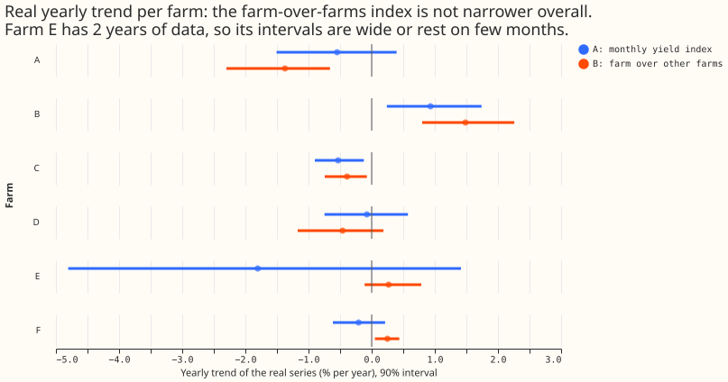
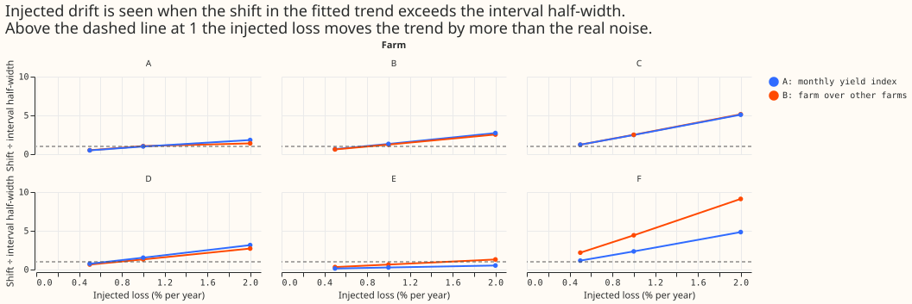
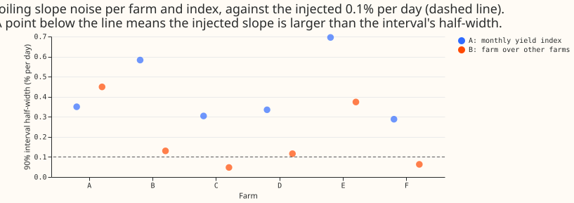

How small a yearly drift or a soiling loss can the six metered solar farms' output show, with and without comparing each farm to its neighbours?
A loss of 1 per cent of output per year is visible in 4 to 5 of the 6 metered solar farms, and a loss under about 0.4 per cent per year is visible in only 2 (farms C and F). A loss is visible when it shifts the fitted yearly trend by more than the half-width of that trend's 90% interval. Experiment 286 asks how small a yearly drift or a soiling loss the farms' output can show. We added known losses to each farm's real half-hourly output: a loss growing linearly from a random start date, and a soiling loss of 0.1% of output per day that resets on any day with 5 mm or more of rain (from ERA5, the European Centre for Medium-Range Weather Forecasts' fifth-generation reanalysis). We then read each loss back with two yield indices. Experiment 179, the earlier exploration of the six farms' data, defined the plain index: each farm's power divided by the irradiance expected under a cloudless sky, summarised per calendar month. The farm-over-farms index is new here. It divides the farm's power by each other farm's power on half-hours when the other farms produce within 20% of their own clear-sky output, then averages the farm pairs.
The farm-over-farms index does not narrow the yearly trend interval overall, but of the two indices only it reads soiling, and only at farms C and F (and at D under the looser pre-registered rule). The prediction needed a half-width under 0.6 %/yr at the farms with 4 or more years, and the farm-over-farms index reaches it at 2 of 5 farms (C and F). The farm-over-farms index also removes most of a false soiling slope. With nothing injected, the plain index reads +0.26 to +0.62 %/day at 5 of 6 farms when fitted against the days since the last day with 5 mm or more of rain, probably because cloudier days tend to follow rainy days. The farm-over-farms index reads a slope smaller than 0.05 %/day in size at farms B, C, D, and F, and +0.10 and +0.46 %/day at farms A and E. The prediction therefore holds in part: the soiling half is supported, and the narrower yearly interval is not.



Headline numbers
- Real yearly trends (%/yr, 90% interval, from resampling months 500 times), the plain index then the farm-over-farms index. Farm A: −0.55 (−1.51 to +0.40) and −1.37 (−2.30 to −0.66). Farm B: +0.93 (+0.24 to +1.74) and +1.49 (+0.80 to +2.26). Farm C: −0.53 (−0.90 to −0.13) and −0.39 (−0.74 to −0.08). Farm D: −0.08 (−0.75 to +0.57) and −0.46 (−1.17 to +0.19). Farm E (18 and 10 months): −1.80 (−4.81 to +1.41) and +0.27 (−0.11 to +0.79). Farm F: −0.21 (−0.61 to +0.21) and +0.25 (+0.05 to +0.44). The plain index reproduces the trends printed on experiment 179's result page.
- Interval half-width at the 5 farms with 4 or more years (A, B, C, D, F): the plain index 0.95, 0.75, 0.39, 0.66, 0.41 %/yr (median 0.66); the farm-over-farms index 0.82, 0.73, 0.33, 0.68, 0.19 %/yr (median 0.68). C1 (under 0.6 %/yr) holds at 2 of 5 farms for the farm-over-farms index and 2 of 5 for the plain index.
- Same months. The farm-over-farms index keeps 48 to 56 months against 59 to 65 for the plain index, which widens its interval. The plain index refitted on only the months the farm-over- farms index kept has half-widths 0.86, 0.83, 0.37, 0.86, and 0.33 %/yr at farms A, B, C, D, and F, so on equal months the farm-over-farms index is narrower by 4% to 41%.
- Drift recovery. The injected loss comes back at a median 0.92 to 1.08 of its size with the plain index at the 5 farms with 4 or more years and at farm E 0.86 to 0.87. The farm-over-farms index returns 0.87 to 0.96 at those farms (0.60 at farm A for 2 %/yr), probably because the monthly calendar normalisation absorbs part of a trend, and 0.29 at farm E, which has 10 usable months.
- Detection at 1 %/yr. The shift in the fitted trend over the half-width is, for farms A to F, 0.99, 1.32, 2.48, 1.53, 0.26, and 2.35 with the plain index, and 1.05, 1.23, 2.50, 1.32, 0.64, and 4.42 with the farm-over-farms index. The plan's rule (median recovery 0.7 to 1.3, and the injected series' own interval excluding zero in at least half the starts) is met at 4 farms at 1 %/yr with each index, so the stop rule does not fire.
- Minimum detectable drift (the injected rate whose shift equals the half-width, from the median shift per injected %/yr, so it can sit either side of the 1 %/yr ratio above), the plain index then B in %/yr: farm A 1.05 and 1.01, B 0.75 and 0.81, C 0.40 and 0.40, D 0.65 and 0.76, F 0.42 and 0.22, E 3.8 and 1.6.
- Soiling. Under the plan's rule, 3 farms read the injected 0.1 %/day with each index. Under the stricter post hoc rule (the shift exceeds the half-width in at least half the starts) the plain index reads it at 0 farms and the farm-over-farms index at 2 (C and F). The half-widths on the slope are 0.35, 0.58, 0.30, 0.34, 0.70, and 0.29 %/day for A, and 0.45, 0.13, 0.05, 0.12, 0.37, and 0.06 %/day for B, at farms A to F. The plan's recovery ratio is 1.00 everywhere because the injected change is a known multiplier and both estimators are linear in the log of the index, so it carries no information.
- Compute and inputs. One fit per farm and injection, no retraining, no weather forecast. Rainfall is ERA5 total precipitation (a past-weather product that arrives about 5 days late and so does not exist at forecast time), summed per UTC day at the nearest 0.25 degree cell.
Checks
- Median minus mean forecast, and mean-forecast error: not applicable, because no forecast is made or scored.
- Triggers. The result contradicts its own prediction (C1): tested with the same-months bullet above, which finds that fewer months explain part of the gap, and that on equal months the farm- over-farms index is narrower but still above 0.6 %/yr at A, B, and D. The reproduction of experiment 179's trends to the printed digits is the sister-experiment check on interval width. The other five triggers (a failed control, the quantile and mean forecast disagreeing, leave- one-out, a nested arm, a later design depending on this result) do not apply. No audit was run.
- Injected recovery is partly by construction. An index linear in the log of the multiplier returns the injected multiplier exactly, so the recovery ratio only exposes attenuation from the calendar-month normalisation and the month filter. The informative figure is the shift over the half-width.
- Real series carry their own trend. The injected estimate adds to each farm's real trend and noise, so detection is judged by the shift from the un-injected estimate, not by the interval excluding zero (the pre-registered rule, kept as one of two).
- Neighbours' own drift. The farm-over-farms index measures a farm against the others, so a farm's real trend and its neighbours' real trends are mixed. The six the farm-over-farms index trends sum to −0.2 %/yr, but they cover different months (10 to 56), so they need not cancel.
- Plan amendments before any injection result was read. The neighbour mask uses a band of 0.8 to 1.2 around each farm's own calendar-month 90th-percentile yield, not 0.85 to 1.15 around a single yearly value (the single value dropped all but 5 to 36 of 86 months); the farm-over-farms index needs 20 rows a month, not 40. Eight random start dates were used, not five.
- Code review caveats. The month filter on the relative index runs after the injection, so the injected and un-injected fits can keep different months when a month's index crosses 0.75. The minimum detectable drift is an injected rate after the start date, read through a line fitted to the whole history, so it is not a plain yearly rate. The days-since-reset counter runs over days with data, and a day without ERA5 rainfall counts as dry. No leakage of the injected series into the neighbour mask was found.
- Not done. No drift or soiling is claimed for any real farm, and the real-data stage reports only the trends above. Panel-plane irradiance, temperature, and the flat top of experiment 179 (the farm-over-farms index stays under 650 W/m² to avoid it, the plain index does not) were not modelled.
Open questions
- Can an independent record, such as a panel-level or inverter-level reading, show whether the real farm trends of −1.8 to +1.5 %/yr are drift, or are the farms' own differences from each other?
- Does a regression on irradiance on the panel plane and cell temperature narrow the yearly interval below the farm-over-farms index's 0.19 to 0.82 %/yr?